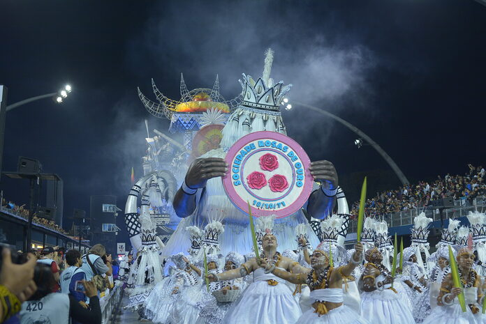

╭₊˚๖ Popularidade ๖₊˚
☫ Rosas de Ouro
O distrito foi berço da escola de Samba, Rosas de Ouro.
A Sociedade Rosas de Ouro é uma escola de samba que fundada em 1971, na Brasilândia, por José Luciano Tomás da Silva,Jorge Augusto de Andrade, João Roque "Cajé", José Benedito da Silva "Zelão", Hernane Basílio, Ronaldo Gomes e Eduardo Basílio, sendo o último, o presidente desde a fundação da escola até sua morte em outubro de 2003.
Seu nome foi inspirado numa condecoração instituída pelo Papa Gregório II em 730, para condecorar virtuosas princesas católicas, o buquê de Rosas de Ouro. Ela representa uma pequena roseira de ouro maciço. A flor dourada brilhando reflete a majestade de Cristo, com uma simbologia muito apropriada, já que os profetas o chamaram "a flor do campo e o lírio dos vales". Sua fragrância, de acordo com Leão XIII, "mostra o odor doce de Cristo que deve ser difundido extensamente por seus seguidores fiéis” (Acta, vol. VI, 104), e os espinhos e o matiz vermelho relembram a sua paixão".

A Sociedade Rosas de Ouro foi campeã do Grupo Especial sete vezes, sendo o último Campeonato em 2010.
Atualmente a Rosas de Ouro é uma das maiores escolas de samba do Brasil, participa sempre do Desfile do Carnaval em São Paulo.
☫ Seriado Antônia
O distrito ficou bastante conhecido por conta da Rede Globo que gravou a série Antônia em 2006, mostrando fisicamente a Brasilândia antes de seu desenvolvimento. A série foi um grande sucesso sendo indicada ao Emmy e reprisada no canal Viva. O distrito também foi citado em outros diversos programas da emissora como a novela A Favorita, I Love Paraisópolis, Haja Coração. E em programas como Altas Horas, Jornal Nacional e SPTV em reportagens mostrando os bons médicos da região, cultura e pautas sobre assuntos diversos.
Sinopse do Seriado: Quatro amigas de infância, moradoras de um bairro pobre da periferia de São Paulo, batalham para trazer de volta ao cenário musical um grupo de rap do qual faziam parte.